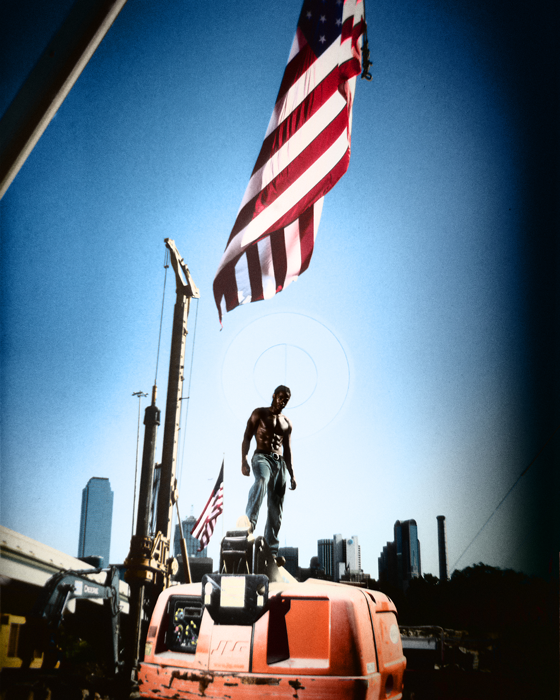
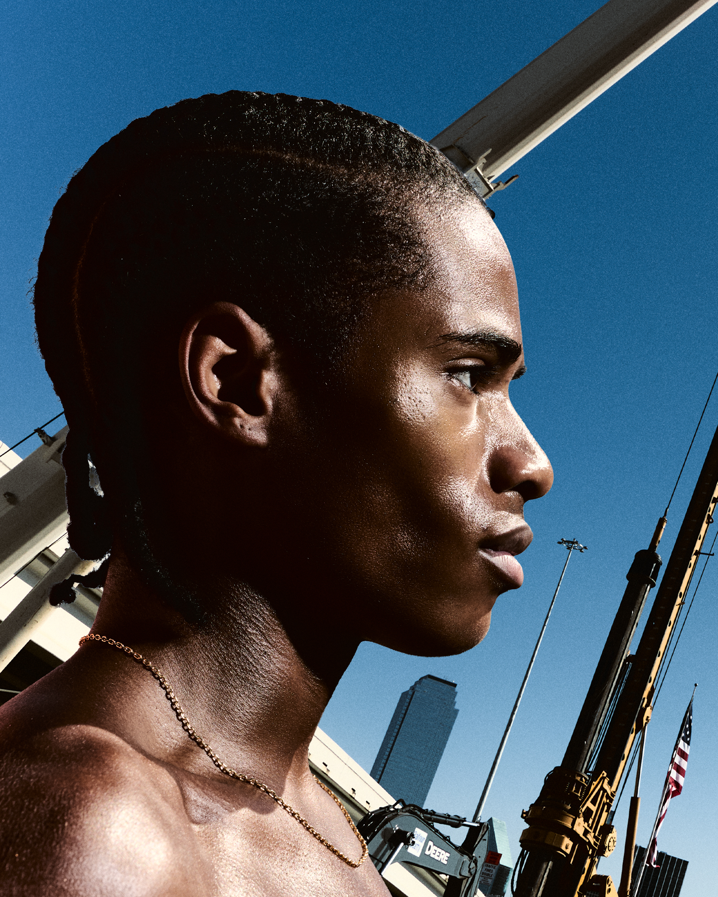
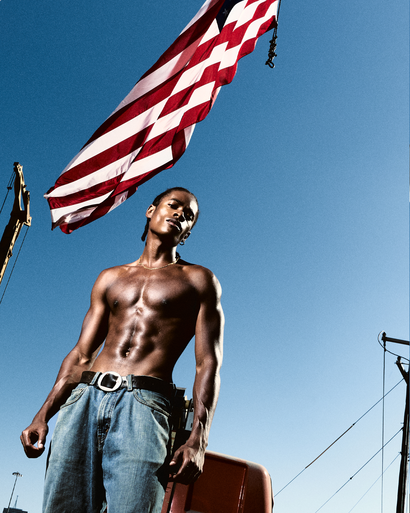
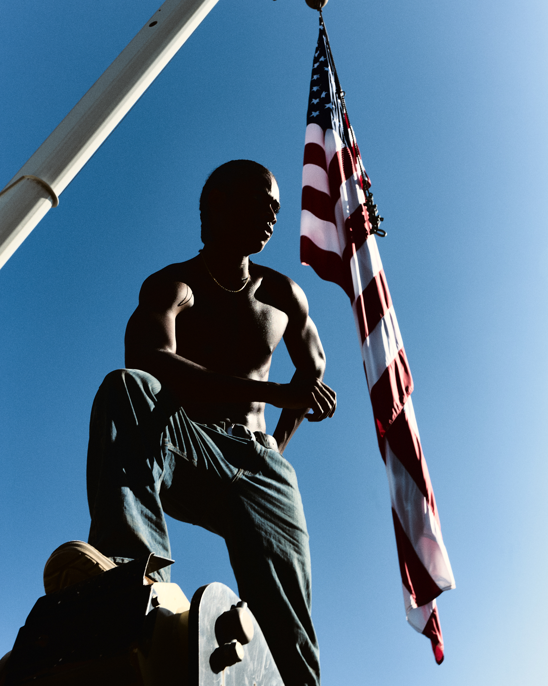
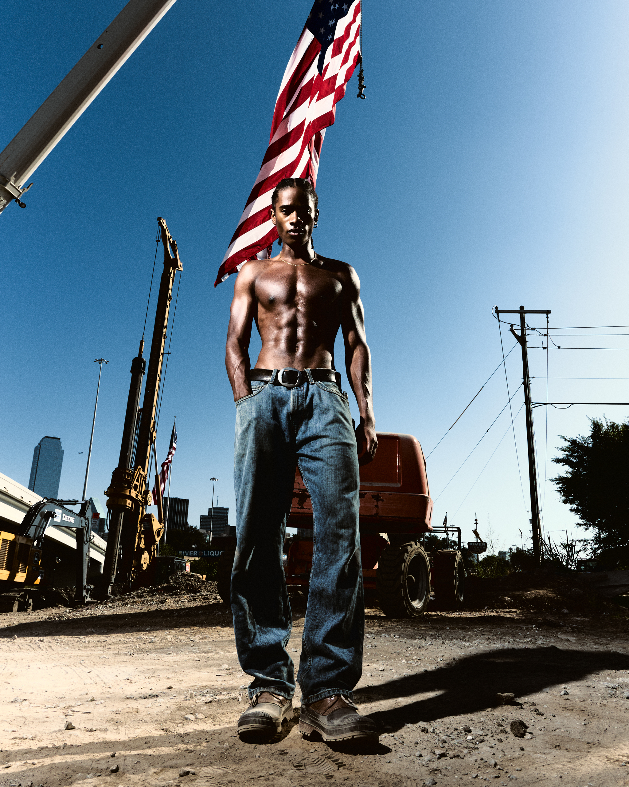
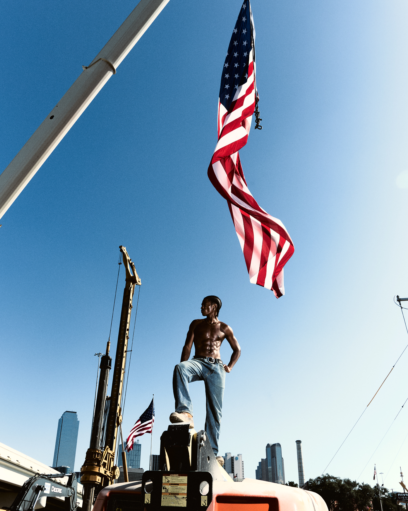
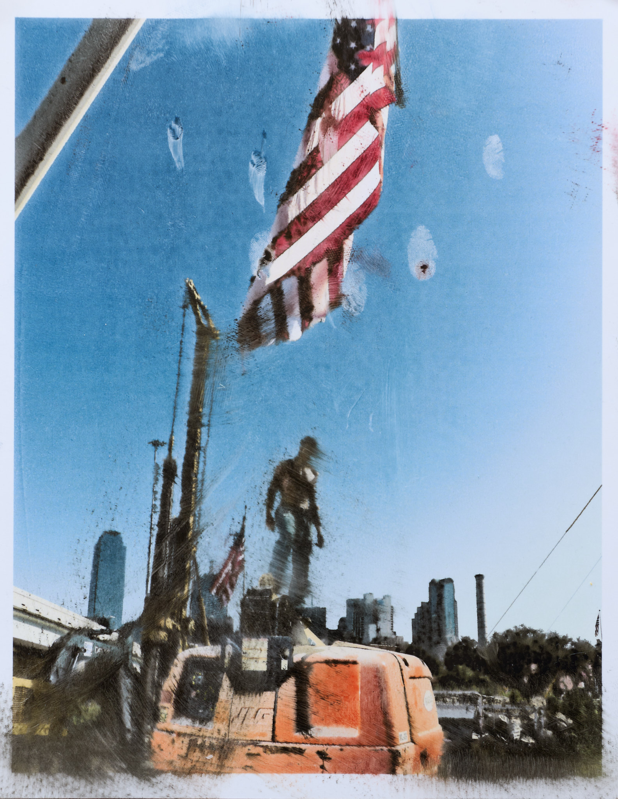

Personal Work / Photography
America
About the project
Shot on the Fourth of July with model Dylan Stiggers on an active construction site. I photographed it digitally, then printed the images, rescanned them, and edited from the scans, so the paper grain and print texture become part of the picture.
- Photography & editing
- Peter Sanjur
- Model
- Dylan Stiggers






